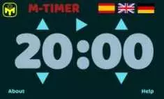

Pentomania
Es una serie de rompecabezas, o puzzles, que demandan razonamiento, familiarización con las piezas involucradas, prueba y error, y paciencia para ser resuelto.
Es una serie de rompecabezas, o puzzles, que demandan razonamiento, familiarización con las piezas involucradas, prueba y error, y paciencia para ser resuelto.

Es un híbrido de Mastermind y el patrón de bloqueo de Android. Un juego que tal vez llegues a odiar. Veremos.
SUMADO es un juego de lógica que requiere un mínimo conocimiento de aritmetica para ser resuelto. Es una oportunidad de gimnasia mental y diversion al mismo tiempo.
Se puede descargar la aplicación en Google Play Store o jugar en línea.
Ver más...
Se presenta una suma donde los dígitos han sido reemplazados por letras. Cada letra es un dígito diferente; a letras iguales corresponden dígitos iguales. Encontrar el valor de cada letra para que la suma sea correcta.. Ver mas...
El objetivo es disponer las 16 piezas dentro de la caja, en dos capas... Ver mas...
Cuadróminos es un juego de mesa; variante del dominó tradicional. Ver mas...
Un juego de estrategia e inducción... Ver mas...
Rompecabezas varios... Ver mas...
Notas que hice, originalmente para mi mismo, como un recordatorio de los pasos que debía seguir para resolver el cubo de Rubik. Ver mas...


M-Timer permite controlar un tiempo establecido previamente y avisa cuando se ha cumplido. El tiempo, fijado por defecto, se modifica con las flechas que apuntan hacia arriba para incrementar y hacia abajo para decrementar. Una vez establecido el tiempo se esta en condiciones de iniciar la cuenta regresiva. Esto se hace picando en el boton inicio. En pantalla se presenta el tiempo restante. Cuando se ha completado el tiempo comienza un sonido audible para alertar sobre esta situación. Se puede interrumpir el conteo de tiempo en cualquier instante pulsando el boton detener y reanudar luego. M-Timer puede configurarse para idioma Inglés, Español y Alemán.
Puedes correr la version web o bién la version móvil para tablets y celulares.